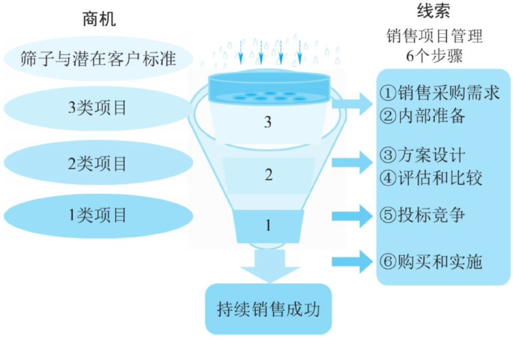

不管是在市场部、产品部，还是运营团队，懂得 ToB 销售，才能更好地合作。除了《销售加速公式》等几本经典作品外，我觉得《华为销售法》也值得一读。这本书不仅仅分享了华为的销售打法，还涉及到了范畴更广的市场策略、战略洞察、行业分析等相关的内容。无论是作为营销中的一环，还是作为营销团队的老大，都需要这样从全局的视角来思考B2B营销这件事儿。尤其对于已经有了不少经验的营销人来说，这本书有帮助自己温习+巩固的良效。在此分享几条我的阅读笔记。
关于ToB市场打法
大部分有经验的B2B市场人应该都能认识到 Inbound Marketing 集客式营销的价值，但是对于中国的国情来说，获客这一环节之后，还有漫长的路要走。因此，拜访、展会、沙龙、饭局等依然至关重要。其中有代表性的就是书中分享的思科。
不管是在中国市场，还是在国际市场，思科的打法都是一个专业的路数，这个方法也是To B市场的标准打法，值得学习。
首先，它会在这个国家设置办事处，在国家的各个省份设置办事处，而且人力的配置相当到位，一般一个省有10～30人，有销售人员、技术支持、售后服务，销售力量能够覆盖整个省级市场。
其次，它的人员培训很全面，培训完之后，销售人员对于目标客户进行第一轮陌生拜访，然后，举行各种行业展会，邀请第一轮接触的客户参加，一边扩大影响力，一边建设客户关系，还举办各种各样的技术交流会，邀请客户的管理层和技术层参加，让客户接受思科的产品和解决方案。
同时，为了建设客户关系，它经常举办各种各样的酒会、沙龙，经常邀请重要客户打高尔夫等，这些套路都被华为学习并借鉴。
关于战略控制点
**战略控制点是啥？**举几个例子来认识：
- 富士康的战略控制点就是成本优势。作为专业的生产制造厂商，在其他方面和竞争对手相比，它的优势并不明显，但是在成本控制方面，它比其他厂家的成本低15%左右，这就是巨大的成本优势，使得它成为该领域的第一。
- 英特尔的战略控制点就是技术优势，它的技术发展总是比竞争对手快6～12个月，总是提前一步发布新产品，引领市场发展，决定市场的技术选择。
- 华为的战略控制点就是它的研发能力和营销能力。它能够依靠自己的研发队伍，锲而不舍地研究，最终形成自己的产品能力。华为有句话叫“板凳要坐十年冷”，就是要求研发人员耐得住寂寞，要坚持，目标是至少十年的长期发展，这也是华为的核心企业文化之一。
无论是我经历过的创业公司，还是待的互联网大厂，我发现定战略控制点这件事，好像都没太做到位。往往都是后知后觉，幸运的话，就是从客户的反馈中，莫名其妙发现了自己产品的优势，更多的情况是一年换一个定位，“随机应变”当然也就很难有所谓的战略控制点。
关于销售漏斗
1.项目如何分类？
客户转化漏斗，或者叫销售漏斗，大家应该都很熟悉了。发展到今天，销售漏斗的形式基本如图所示。项目的整个发展过程通过这个漏斗模型来模拟，很形象，也很实用。这本书分享了华为针对销售漏斗阶段而划分的项目分类，我觉得值得参考。

在销售工作中，首先是发现销售线索。这些线索属于情报，没有得到确认，销售人员跟踪这些线索，联系客户，然后确认项目需求真实存在，并且有预算。这时，线索就转化为项目机会或者商机。
我们把项目线索比喻为一滴水，多个项目机会就是多滴水，汇聚成水流——商机。当项目机会进入销售漏斗管理工具，如图所示，通过层层过滤，经过漏斗的3、2、1层不同的位置，也就是项目发展的不同阶段，最终水从漏斗下面的小喇叭口流出，项目成交，进入持续的客户服务流程中去。
2.如何验证有效商机？
我曾遇到，市场团队和销售团队时不时就会针对线索和商机的口径不一致，带来一些小摩擦的情况。销售团队容易嫌弃市场团队给的线索质量不够高，懒得拜访做转化。市场团队容易质疑销售团队判断为商机的标准是否太模糊或者太苛刻。
到底如何验证一条有效商机呢？华为的做法是：要求在验证项目是否为有效商机时，至少要和客户接触，不管是面谈，还是电话或邮件，都要先接触客户，确认这个项目的采购需求，而且采购有明确的时间规划，一般要求1年内有采购计划，这样这个项目线索才是有效的。
3.多少商机储备才合适？
如何评价公司的商机储备是否合适？就是看销售漏斗的成交金额和3类项目商机总额的比率，这个比率是一个极为重要的指标，尤其是针对年终做总结和来年规划的时候。它既关系到市场团队和销售团队的能力，也关系到销售的信心。
对一家公司而言，如果其产品相对固定，针对某个行业的情况，这个商机储备的比率大概会是固定的，例如1:4或者1:8，华为数通国际部要求1:4。但是在不同行业，竞争情况不一样，比率会有所不同。如果各行业的销售数据汇总起来，公司的销售漏斗通常会稳定在一个形状。
这本书中，分享了不同类型企业常见的衰减率供大家参考：
| 企业类型 | 衰减率（参考） |
|---|---|
| IT类/高科技大型公司 | 1:4，1:5 |
| 工程类/制造业中等规模民营企业 | 1:6，1:7 |
| 小型企业 | 1:8，1:9 |
**除了这几条笔记外，《华为销售法》还分享了华为的客户关系管理方法、准直销的渠道销售模式，以及狼性文化。**例如，关于准直销的渠道销售模式，分享到“除运营商业务以外的所有行业市场，在华为叫作企业网，也就是To B模式业务。因为企业网的市场大、项目多，而每个项目的金额一般在10万～100万元，仅仅依靠厂家招人做直销覆盖市场是不现实的。只有发展代理商，依靠渠道的力量才能覆盖全国乃至全球的市场”等。
更多内容在此不做赘述，此书推荐大家一读。